Marca
Los logos de Mamut Herd, listos para descargar. SVG para imprenta y diseño; PNG con fondo transparente para todo lo demás.
Logo principal
Es el logo de la casa. Úsalo siempre que haya espacio: web, documentos, publicidad y presentaciones.


Versión vertical
Para espacios cuadrados o altos: etiquetas, empaques y portadas.


El mamut solo
El símbolo sin el nombre, para cuando la marca ya está presentada: sellos, stickers y detalles.


La m
La versión mínima: una m que también es un mamut. Solo para espacios pequeños, como fotos de perfil, íconos y firmas.


La manada
Tres mamuts de distintos tamaños. Se usa al hablar de las empresas asociadas.


Sello de miembros
Para la web, las facturas, los empaques y la vitrina de cada empresa de la manada.





Colores
Toca un color para copiar su código.
Tipografía
Las dos son gratuitas y de licencia abierta.
Intro animada
Cuatro segundos para abrir las apps y cerrar los videos.

Cómo usarla
- Usa el logo principal siempre que quepa. La m es solo para espacios pequeños.
- Deja alrededor del logo un espacio libre igual al alto de la letra M.
- No cambies los colores, no lo estires y no le pongas sombras ni contornos.
- Sobre fotos o fondos con textura, usa la versión a una tinta.
- El colmillo va en ámbar. Si solo hay una tinta, todo el logo va en ese color.
- En contratos, facturas y documentos, el nombre completo es Mamut Herd S.A.S.